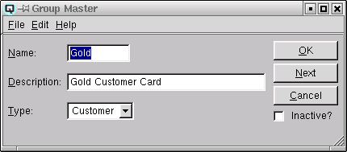

Group Master

The "Group Master" window is used to create account groups, customer
groups, vendor groups and item groups.
Name
The name of the group.
Description
A brief description of the group.
Type
There are six group types:
-
- Account - Account groups link ledger accounts for the
purpose of reporting. For example, a profit and loss statement can be
printed for only those accounts included in a group.
- Customer - Customer groups link customers for the purpose
of special pricing and reporting. For example, you may sell an item to
only a specific group of customers at a special price.
- Vendor - Vendor groups link vendors for the purpose
of special costing and reporting.
- Employee - Employee groups link employees for the purpose
of reporting.
- Personal - Personal groups link personal aquaintances for the
purpose of reporting.
- Items - Item groups link items for the purpose of pricing
and reporting. For example, you can link a price (regular or
promotional) to all items within a group.